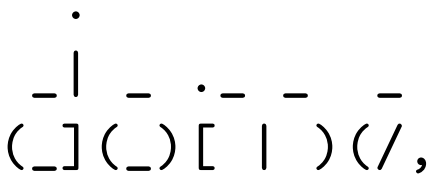
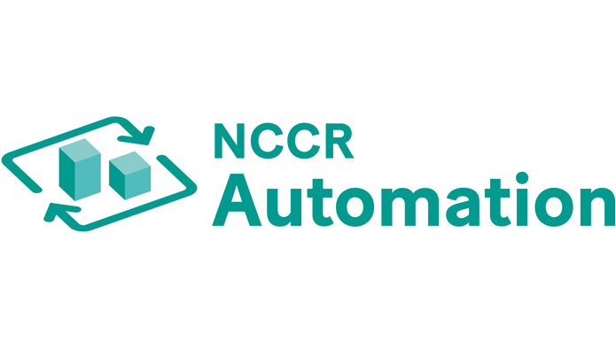
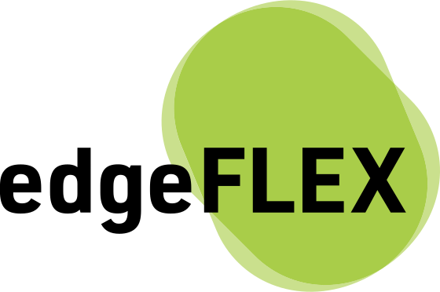
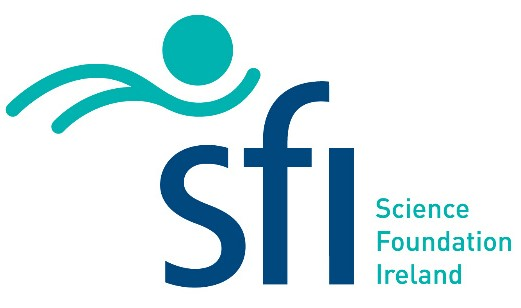
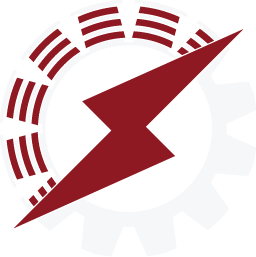

Current
I am currently actively involved in the following projects:

Dome: Dome is a software tool for power system analysis developed by Federico Milano and his group. The program is written in Python, C and Fortran. Dome can solve power flow analysis, continuation power flow, time domain simulation, small signal stability analysis and optimal power flow. I have been contributing to this project since 2017.
Past
Projects in which I participated in the past:

NCCR Automation: The NCCR (National Centre of Competence in Research) Automation (grant no. 51NF40 18054) is a project funded
by the Swiss National Science Foundation. NCCR Automation investigates new approaches to the control of complex automated systems and implements them in concrete applications in practice, aiming at strengthening Switzerland's leading role in automation and control technology. I was a member of the NCCR Automation team from May. 2022 to Mar. 2023. During this period I was fully funded by the project. My primary task in the project was to develop scalable analytical and numerical tools that contribute towards an end-to-end automation of future power systems.
edgeFLEX:
The EU H2020 project edgeFLEX (grant no. 883710)
explored solutions that enable the provision of control services to the grid by Virtual Power Plants (VPPs),
i.e. by control centres that aggregate
heterogeneous distributed energy resources. edgeFLEX comprised ten
partners from industry and academia and was coordinated by
Ericsson GMBH. I was a member of the edgeFLEX team from Oct. 2020 to Apr. 2022,
running UCD's participation in the project. During this period I
was fully funded by the project. My primary task in edgeFLEX
was to develop new frequency control concepts for VPPs and Energy
Communities.

AMPSAS:
The Science Foundation Ireland (SFI) Investigator Program AMPSAS
(Advanced Modelling for Power System Analysis and Simulation, grant no. SFI/15/IA/3074, 2016-2021)
focused on the development of novel analytical and computational tools to understand, efficiently
design, and optimize ever-changing power systems and smart grids, through
model-based approaches. The project was led and coordinated by
Federico Milano.
I was a member of the AMPSAS team from Sep. 2017 to Oct. 2020, studying
research problems on power system stability analysis, automatic control, and
numerical simulation. My PhD scholarship was fully funded by the project.

Prometheus: The research team Prometheus designs and builds energy efficient electric vehicle prototypes. The team consists of undergrad and PhD students at the National Technical University of Athens (NTUA), Greece. I was a member of Prometheus 2015-2016 (supervisor: Prof. Antonios Kladas), with primary task to improve the powertrain and electrical systems of the vehicle Pyrforos II. With the 2015-2016 team we participated in the Shell Eco Marathon, winning the technical innovation and communication awards of the competition.
- © gtzounas
- HTML5 UP
- ORCID GoogleScholar ResearchGate LinkedIn